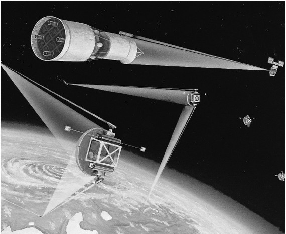

Президент Рейган и программа СОИ
23 марта 1983 года тогдашний президент США Рональд Рейган обратился к своим согражданам со следующим посланием:
Предмет, который я сегодня хочу обсудить с вами, является своевременным и важным. Своевременным, потому что я принял решение, которое несет в себе надежду для наших детей в XXI веке. Об этом решении я сообщу вам через несколько минут. И важным, потому что это большое решение придется воплощать в жизнь вам.
<…>
Я знаю, что все вы хотите мира. Хочу его и я. Но я также знаю, что замораживание ядерных вооружений стоит очень далеко от мира. Замораживание не делает жизнь более безопасной, а риски возникновения войны мень шими.
<…>
Я обращаюсь к научному сообществу нашей страны, к тем, кто дал нам ядерное оружие, с призывом направить свои великие таланты на благо человечества и мира во всем мире и дать в наше распоряжение средства, которые бы сделали бы ядерное оружие бесполезным и устаревшим. Сегодня, в соответствии с нашими обязательствами по договору по ПРО [противоракетная оборона], признавая необходимость более тесных консультаций с нашими союзниками, я предпринимаю первый важный шаг. Я отдаю распоряжение начать всеобъемлющие и энергичные действия по определению содержания долгосрочной программы научных исследований и разработок, которая положит начало достижению нашей конечной цели устранения угрозы со стороны стратегических ракет с ядерными зарядами. Это может открыть путь к мерам по ограничению вооружений, которые приведут к полному уничтожению самого этого оружия. Мы не стремимся ни к военному превосходству, ни к политическим преимуществам. Наша единственная цель – и ее разделяет весь народ – поиск путей сокращения опасности ядерной войны.
<…>.
Далеко не все тогда поняли, что скрывается за словами американского президента. Многие годы баланс сил на мировой арене поддерживал документ, который СССР и США подписали в начале 1970-х годов – Договор по ПРО. Отказ от разработки этой системы вооружений долгое время сдерживал горячие головы по обе стороны океана и позволял миру жить более или менее спокойно. Региональные конфликты я в расчет не беру. Теперь же Америка была намерена сломать установившееся хрупкое равновесие.
Военные и промышленные круги США встретили инициативу президента с энтузиазмом и воодушевлением. Там сразу поняли, что работы по стратегической оборонной инициативе сулят огромные дивиденды. По самым скромным подсчетам, только на подготовку всех компонентов системы ПРО к развертыванию требовалось не менее ста миллиардов долларов. А в окончательном виде СОИ «потянула» бы не менее чем на триллион долларов.
Такая же эйфория охватила и часть научных кругов Америки. Ученым, по большому счету, не столь важно, чем заниматься. Главное, чтобы работа приносила моральное удовлетворение. Ну а если за это еще и хорошо платят, то можно и горы свернуть.
О моральной стороне дела, как правило, вспоминают уже потом, когда новая разрушительная система вооружения создана и грозит неисчислимыми бедами всему человечеству.
Президент США Рональд Рейган
Гораздо сдержаннее отнеслись к выступлению президента в Конгрессе США. Законодателям предстояло профинансировать программу, то есть изыскать в бюджете дополнительные средства, которые пойдут на «звездные войны». А это весьма болезненный процесс. Нужно было сначала у кого-то отнять, чтобы потом дать военным, поэтому самую сильную критику своей инициативы Рональд Рейган встретил именно в Конгрессе.
Про реакцию простых американцев можно даже не упоминать. В своем большинстве они были «за». Долгие годы государственная пропаганда запугивала их «советской военной угрозой». Поэтому, когда было предложено создать систему защиты от нее, американцы поддержали этот проект. В сложные вопросы финансирования программы, решения технических задач, учета геополитических интересов обыватели даже не вдавались.
В июне 1983 года Рональд Рейган учредил три экспертные комиссии, которые должны были дать оценку технической осуществимости программы «звездных войн». Комиссии честно отработали свое и пришли к такому выводу: несмотря на крупные нерешенные технические проблемы, достижения последних двадцати лет применительно к вопросу создания ПРО выглядят многообещающе. Была предложена схема эшелонированной оборонительной системы, основанной на новейших военных технологиях. Каждый эшелон этой системы был предназначен для перехвата боеголовок на различных этапах полета.
Что же должна была представлять собой система ПРО, которую предстояло разработать в рамках СОИ?
По замыслу разработчиков системы она должна была включать в себя как наземные средства, так и компоненты воздушного и космического базирования. Последняя составляющая, о которой больше всего говорили и писали, дала инициативе неофициальное название – «программа «звездных войн».
Наземные средства – это командные пункты, центры обработки информации, радиолокаторы и многое другое, что должно было обеспечить наблюдение за ракетно-ядерными средствами потенциального противника, мгновенную регистрацию факта ракетного пуска, обработку информации и выдачу целеуказаний. К наземным средствам относились и противоракеты, которые должны были уничтожать вражеские боеголовки при их подлете к целям.
Воздушная компонента включала в себя точно такие же средства, что и наземная составляющая, но все они должны были располагаться на борту самолетов, постоянно несущих боевое дежурство. При этом достигалось не только дублирование систем, но и существенно расширялась зона их действия. Также на борту самолетов предполагалось установить боевые лазеры, предназначенные для уничтожения крылатых ракет и стратегических бомбардировщиков.
И наконец, к космической компоненте относились многочисленные разведывательные космические аппараты, собирающие разнообразную информацию обо всем, что происходило на земном шаре; боевые орбитальные станции, оснащенные лазерами с ядерной накачкой; противоспутниковые системы; боевые корабли для «завоевания господства в космосе» и другое. Все это позволяло уничтожать вражеские ракеты не при подлете к цели, а сразу после их старта. Большую роль должны были сыграть и те космические системы, развертывание которых либо уже состоялось, либо должно было начаться в ближайшее время.
Из всех технических средств, которые предполагалось задействовать в системе ПРО, к моменту объявления инициативы существовала лишь малая часть. Все остальное нужно было еще придумать и изготовить.
Комиссии порекомендовали начать программу исследований и разработок с целью завершить их в начале 1990-х годов демонстрацией основных технологий, а затем, основываясь на полученных результатах, принять решение о продолжении или закрытии работ.
Следующим шагом на пути реализации СОИ стала появившаяся 6 января 1984 года президентская директива № 119. Именно она положила начало научным исследованиям и разработкам, которые должны были дать ответ на вопрос: можно ли создать новые системы оружия космического базирования или какие-либо другие оборонительные средства, способные отразить ядерное нападение на США?
Но очень скоро выяснилось, что обеспечить выполнение грандиозных задач, поставленных перед программой, теоретически, конечно, можно, но сделать это весьма трудно. И дело было не только и не столько в финансировании проекта. Вероятно, если бы возникла такая необходимость, американцы смогли бы выделить нужные средства, хотя речь шла о фантастических суммах. Главная проблема была в том, что даже при развертывании всех компонент, система ПРО не стала бы панацеей. Хотя современные технологии могут многое, но сделать такую систему абсолютно надежной невозможно. Реально ей под силу лишь снизить эффективность нападения противника, но полностью защитить от массированного ракетно-ядерного удара она не сможет.
Тем не менее работы были продолжены. В апреле 1984 года была сформирована Организация по осуществлению стратегической оборонной инициативы (ООСОИ), которая курировала все работы в данном направлении. В ее ведении находились как военные организации, так и гражданские ведомства. На первом этапе ООСОИ занялась координацией всех исследовательских работ, которыми занимались многочисленные компании, вовлеченные в проект, а также университетские центры.
Предполагалось, что после изучения и оценки предложений, сформулированных на тот момент и касавшихся возможности использования в системе противоракетной обороны боевых систем, работающих на различных физических принципах, будет выработана концепция, которую воплотят в жизнь в виде, сначала в виде прототипа системы, а потом в виде полномасштабной системы ПРО.

Концепция размещения системы противоракетной системы в космосе
Дальше первого этапа работы по СОИ не пошли. После окончания президентского срока Рейгана о программе стали постепенно забывать, а в начале 1990-х годов ее окончательно прикрыли.
С самого начала работ по СОИ было ясно, что ее создателям придется столкнуться с массой проблем, причем некоторые из них были явно неразрешимы. Вероятно, это понимал и сам президент Рейган, когда обращался к нации. Тем не менее он пошел на такой шаг, преследуя, как мне кажется, две цели.
Первая состояла в том, чтобы втянуть Советский Союз в очередной, крайне дорогостоящий, этап гонки вооружений. К середине 1980-х годов наша страна и так уже стояла на пороге экономической катастрофы, а вложение новых миллиардов долларов в очередную боевую систему только бы усугубило ситуацию. Что, в принципе, и было нужно американцам.
Второй целью правительства США являлось создание новых технологий, причем не только военных, которые могли бы качественно изменить жизнь американцев. Если отбросить политическую риторику тех лет и отказаться рассматривать СОИ только как систему вооружений, то можно понять, что Рональд Рейган обратился к научному сообществу с просьбой об инициации новой научно-технической революции.
Теперь мы видим, что своих целей американцы добились.
Уже давно нет на карте мира той страны, которая долгие годы реально противостояла попыткам США завоевать мировое господство. Попытки России вернуть себе былое влияние, еще долго будут вызывать только снисходительную улыбку на берегах Потомака.
Свершилась и великая научно-техническая революция. Ее плодами – компьютерами, Интернетом, цифровыми технологиями – мы пользуемся каждодневно.
А программа «звездных войн» стала лишь одной из страниц всемирной истории.